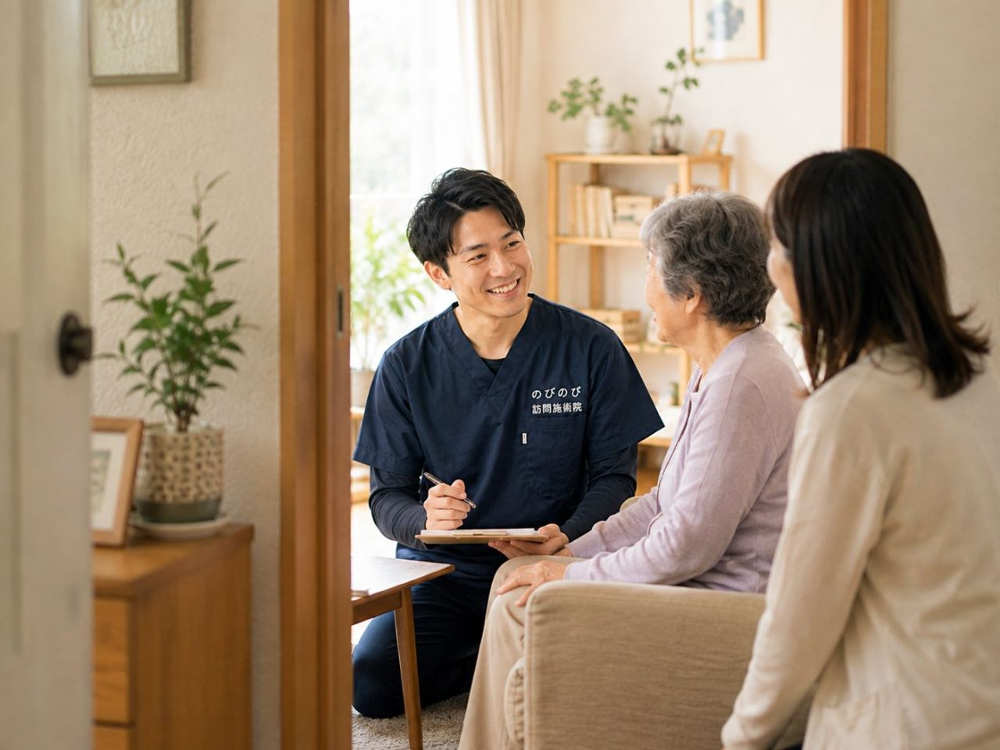

「訪問診療」「往診」「訪問鍼灸マッサージ」。どれも家まで来てもらえる点は同じで、名前が似ているぶん、何がどう違うのか分かりにくいものです。実際、ご家族から「両方受けてもいいの？」「どちらを頼めばいいの？」と尋ねられることがよくあります。結論から言えば、担う人も役割も別なので、いっしょに使えます。ここでは、それぞれが何をするのかを整理し、無理のない組み合わせ方を具体的にお伝えします。
この記事のポイント
訪問診療・往診は、医師が自宅にうかがって診察・治療・お薬の処方を行う医療です。訪問鍼灸マッサージは、医師の同意にもとづいて国家資格者（はり師・きゅう師）が、慢性的な痛み・しびれ・麻痺を和らげるケアで、診断や処方はしません。受け持つ役割が違うので併用でき、多くは主治医の同意書をきっかけに始まります。訪問鍼灸マッサージの自己負担は、1割の方で1回およそ395円（総額3,950円）が目安です。
訪問診療・往診は、医師が行う医療です
訪問診療も往診も、通院がむずかしい方のところへ医師が出向いて行う医療です。診察して体の状態を診断し、必要なお薬を処方し、検査の指示を出す。これらは医師にしかできない仕事で、在宅で暮らす方の健康を根っこで支える役割を担います。血圧や持病の管理、病状の変化への対応も、この医療の範囲に入ります。
つまり、病気そのものを診て、治療の方針を決めるのが訪問診療・往診です。体調が急に変わったとき、どう対処するかを判断できるのも医師だからこそ。在宅の暮らしにおいて、まず土台になるのがこの医療だと考えるとイメージしやすいと思います。
訪問診療と往診の違いは「定期か、臨時か」
同じ医師の訪問でも、訪問診療と往診は性格が異なります。訪問診療は、通院がむずかしい方のところへ計画的に、定期的にうかがって診察や管理を続けるもの。曜日や間隔をあらかじめ決めて、継続して体調を見守っていく形です。慢性の病気や、日ごろの健康管理が必要な方に向いています。
一方の往診は、急に具合が悪くなったときなど、求めに応じてそのつどうかがう臨時の訪問です。発熱した、痛みが強く出た、といった場面で来てもらうものと考えるとよいでしょう。定期的にみるのが訪問診療、必要なときに駆けつけるのが往診、という違いです。
訪問鍼灸マッサージが担うこと
訪問鍼灸マッサージは、はり師・きゅう師という国家資格を持つ施術者が、はりやお灸で体を整えるケアです。医師の同意にもとづいて、慢性的な痛みやこわばり、手足のしびれ、麻痺といった、長く続くつらさをやわらげることを目的とします。関節を動かしやすくする手技や機能訓練を、組み合わせることもあります。これらに追加の料金はかかりません。
ここで大事なのは、鍼灸師は診断やお薬の処方はしないという点です。病気を診断して治療方針を決めるのは医師の役割で、鍼灸はそれに伴う体のつらさを和らげる側にまわります。効果の感じ方には個人差がありますが、日々の過ごしやすさを保つ助けになるケアです。
いちばんの違いは「担う人と、できること」
三つのサービスを分けるいちばんの線引きは、担う人とできることです。医師（訪問診療・往診）は、病気を診断し、治療し、お薬を処方できます。鍼灸師（訪問鍼灸マッサージ）は、診断や処方はしませんが、慢性的な痛み・しびれ・麻痺に対して、はりやお灸で体を整えるケアを受け持ちます。
言いかえると、病気そのものを診て治すのが医療、それに伴う体のつらさを和らげるのが鍼灸、という分担です。どちらが上ということではありません。役割が違うからこそ、片方だけでは届きにくいところを、もう片方が補える関係になります。
競合ではなく、併用できます
役割が違うので、訪問診療・往診と訪問鍼灸マッサージは同時に受けられます。むしろ、主治医の診療を土台に置いたうえで、日々のこわばりや痛みを鍼灸で和らげる形は、在宅の暮らしを多面的に支えます。実際、訪問診療を受けながら訪問鍼灸マッサージも利用している方は少なくありません。
鍼灸を始めるには医師の同意が必要なので、訪問診療の主治医に同意書をお願いする、という流れになることがよくあります。すでに診てもらっている先生がいれば、その先生に相談するところから話が進みます。二つは競い合う関係ではなく、同意書でつながる関係だと考えてください。
診断・お薬・急な変化は、医師が主になります
併用するときに押さえておきたいのが、優先の考え方です。病気の診断や治療、お薬の調整、そして急な体調の変化への対応は、医師が主に受け持ちます。熱が出た、いつもと様子が違う、といったときは、まず主治医や往診に相談するのが基本の流れです。
鍼灸は、その医療を土台にした補助的なケアという位置づけです。体のつらさを和らげる助けにはなりますが、病気を治すものではなく、感じ方には個人差があります。医療と鍼灸の役割をこう整理しておくと、どちらに何を頼めばよいか迷いにくくなります。
同じ部位のリハビリと鍼灸は、同時には算定できません
組み合わせのうえで、ひとつ決まりごとがあります。医療保険のリハビリ（訪問リハビリなど）と鍼灸を、同じ部位・同じ目的で同じ時期に受ける場合、医療保険で両方をそのまま算定することはできません。同じ体の部分に対して、保険の重複が生じないようにするための取り決めです。
とはいえ、これは「両方いっさい使えない」という話ではありません。診てもらう部位や目的を分けたり、時期を調整したりすることで、無理なく組み合わせられる場合が多いものです。すでにリハビリを受けている方は、始める前に当院で状況を確認してご案内します。
お金の仕組みと、訪問鍼灸マッサージの費用
費用の枠もそれぞれ別です。訪問診療・往診は診察としての医療費がかかり、訪問鍼灸マッサージは、はり・きゅうの療養費としての費用がかかります。どちらも医療保険にもとづくもので、介護保険の区分支給限度額とは別の枠で使えます。ですから、介護サービスと重ねても限度額を圧迫しません。
訪問鍼灸マッサージの費用は、1回の施術が総額3,950円で、金額があらかじめ決まっています。自己負担は1割の方でおよそ395円が目安です。別途の出張費（出張料・交通費）はかからず、エリア内はどこでも同額。お支払いは月ごとにまとめてお願いしています。内訳はあとからでも確認できます。
ケアマネジャーがいる場合の進め方
介護保険を使っていてケアマネジャーがついている方は、訪問診療・訪問看護・訪問リハビリ・デイサービスなど、すでにいくつかのサービスを組み合わせていることが多いものです。訪問鍼灸マッサージ（医療保険）は介護保険の限度額とは別の枠なので、これらと重ねても限度額に響きません。
ただ、一日に受ける予定が多すぎるとご本人が疲れてしまうので、全体のバランスは見ておきたいところです。ケアマネジャーと連携しながら、今の暮らしに無理なく収まる形を一緒に考えられます。地域包括支援センターなどの相談窓口を通じて整理する方法もあります。
同意書は、主治医にお願いできます
訪問鍼灸マッサージを始めるには、医師の同意書が必要です。訪問診療や往診で診てもらっている主治医がいる場合は、その先生に同意書をお願いできることが多いものです。「先生に頼みにくい」と感じる方もいますが、依頼の書類や段取りは当院で用意しますので、ご家族が一から病院にお願いに行っていただく必要はありません。
かかりつけの先生がいない場合の始め方も、状況に合わせてご案内します。まずは、いま受けている医療やサービス、困っている体のつらさ、通院の状況をお聞かせください。組み合わせられそうか、鍼灸の対象になりそうかを確認して、無理のない形を一緒に整理します。
よくある質問
訪問診療と訪問鍼灸マッサージは、一緒に受けられますか？
はい、受けられます。医師が行う医療と、鍼灸師が行うケアは役割が違うため、併用できます。多くは、訪問診療の主治医に鍼灸の同意書をお願いする形で始まります。
訪問診療と往診は、どう違うのですか？
訪問診療は、計画的に定期的にうかがって診察や管理を続ける医療です。往診は、急に具合が悪くなったときなど、求めに応じてそのつどうかがう臨時の訪問です。どちらも医師が担います。
鍼灸師は、診断やお薬の処方もしてくれますか？
いいえ。診断やお薬の処方は医師の役割で、鍼灸師は行いません。鍼灸師は、慢性的な痛み・しびれ・麻痺といった体のつらさを、はりやお灸で和らげるケアを受け持ちます。感じ方には個人差があります。
両方受けると、費用は高くなりますか？
それぞれ別の費用がかかりますが、どちらも医療保険にもとづくものです。訪問鍼灸マッサージの自己負担は、1割の方で1回およそ395円が目安。週3回うかがう場合で、ひと月およそ4,740円（1割の方）ほどです。
どちらを先に始めればいいですか？
病気の診断や治療が必要なら、医師の医療が先です。そのうえで、慢性的な体のつらさを和らげたい場合に、鍼灸を組み合わせるとよいでしょう。迷ったら、今の状況をお聞かせいただければご案内します。
訪問リハビリを受けていても、鍼灸を追加できますか？
できる場合が多いです。ただし、同じ部位を同じ目的で同じ時期に診る場合、医療保険のリハビリと鍼灸をそのまま同時に算定することはできません。部位や時期を調整すれば併用できることが多いので、始める前に確認してご案内します。
介護保険の限度額を使い切っていても、鍼灸は受けられますか？
はい。訪問鍼灸マッサージは医療保険で計算し、介護保険の区分支給限度額とは別の枠で使えます。デイサービスなど介護サービスと重ねても、限度額を圧迫しません。
同意書は、どうやって用意すればいいですか？
訪問診療などの主治医がいれば、その先生にお願いできることが多いです。依頼の書類や段取りは当院で用意しますので、ご家族が一から病院にお願いに行っていただく必要はありません。かかりつけの先生がいない場合の進め方も、状況に合わせてご案内します。